여러 주거 공간을 다듬어 온 노을 인테리어 디자인이 완성한 작업들입니다.
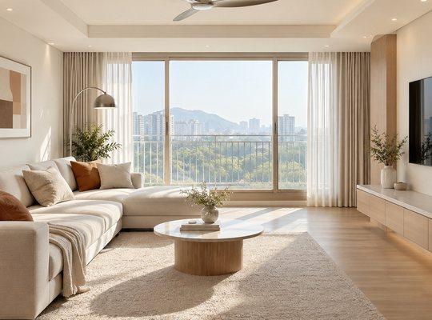
흰색을 바탕으로 원목과 은빛 소재를 고르게 나누어 놓아 따뜻함과 단정함을 함께 담은 집입니다. 색을 아끼고 마감을 다듬어 보기 좋으면서도 쓰기 편한 주거 공간으로 마무리했습니다.
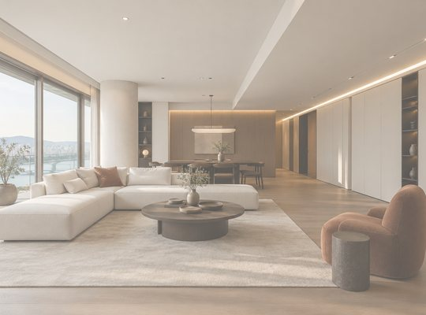
이번 프로젝트는 원목과 흰색을 중심으로 군더더기 없이 깔끔하게 정돈한 호텔 같은 분위기를 담은 주거 인테리어입니다. 긴 복도와 넓은 거실에는 라인 조명을 길게 이어 깊이를 살리고, 높은 천장 끝까지 꽉 채워 올린 수납장…
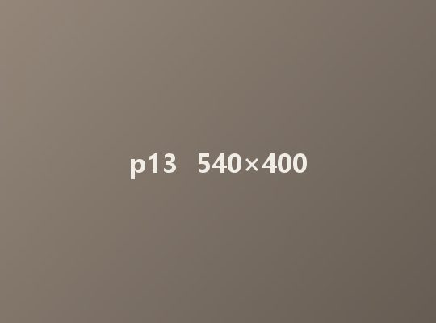
이번 프로젝트는 차분한 톤온톤 색을 바탕에 깔고 주황색을 포인트로 써서 공간에 감각 있는 변화를 준 모던 콘셉트의 인테리어입니다. 집 전체에 같은 마감재를 써서 방과 방 사이를 자연스럽게 잇고, 간결한 선과 가지런한 수납…
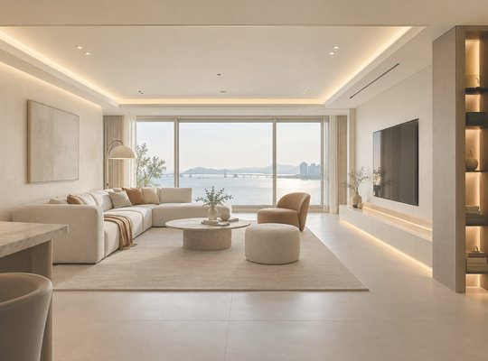
이번 프로젝트는 톤온톤 색과 간결한 선을 중심으로 완성한 모던 하이엔드 콘셉트로, 욕실과 주방, 그리고 드레스룸까지 모든 공간을 같은 재질감과 은은한 조명으로 자연스럽게 이어 정돈된 분위기와 탁 트인 개방감을 살렸습니…
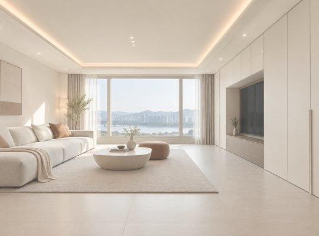
이번 프로젝트는 ‘이어짐과 비움, 눈길이 머무는 미니멀리즘’이라는 콘셉트로, 흰색과 베이지 톤으로 색을 아낀 가운데 섬세한 조명 계획과 간결한 마감이 어우러져 공간에 깊이를 더했습니다. 집 전체에 무광 질감…
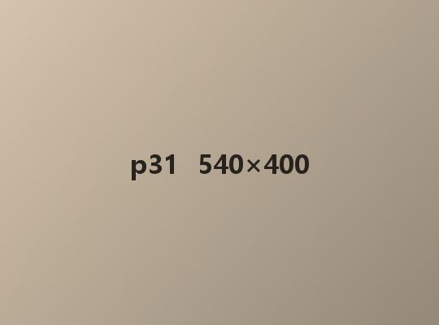
이번 프로젝트는 “덜어 낼수록 또렷해지는 질서”라는 콘셉트로, 마감을 처음부터 끝까지 한결같이 맞춰 생활 속 편안함과 정돈감을 함께 만드는 데 힘을 쏟았습니다. 따뜻한 기운이 도는 무채색 베이지를 바탕으로 바닥, 벽…
이번 프로젝트는 ‘감각 있게 정리된 집’이라는 콘셉트로, 베이지 톤이 고르게 어우러진 간결하고 미니멀한 공간에 품격을 담는 데 집중했습니다. 단순한 구조를 중심에 두고 은은한 색의 조화와 절제한 수납, 조명 계획이 서로 자연…
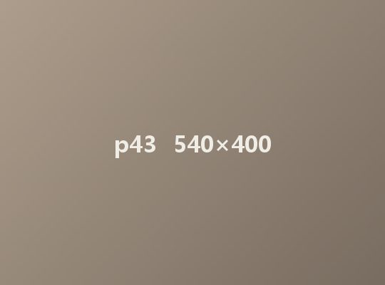
이번 프로젝트는 ‘단단함과 비움 사이’라는 콘셉트로, 공간 곳곳에 안정감과 절제된 품격을 담는 데 집중했습니다. 간결한 선과 꼼꼼한 마감으로 완성한 실내는 보기에 정돈되면서도 세련된 분위기를 전합니다. 짙은 회색 톤의…
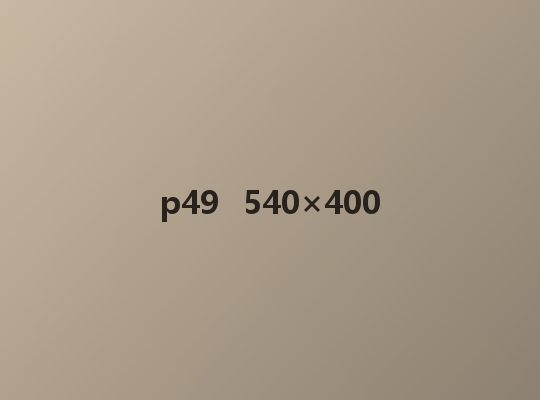
이번 프로젝트는 '모던 빈티지'라는 콘셉트로, 세련됨과 오래된 멋이 함께 머물도록 하는 데 집중했습니다. 깔끔한 흰색 바탕에 남색으로 포인트를 주어 공간을 산뜻하게 정리했습니다. 묵직한 원목 가구와 가죽 가구를 더해 빈티지한…
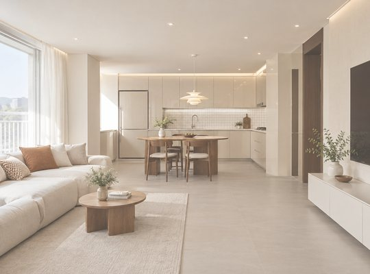
이번 프로젝트는 베이지색 유광 마감재와 흰색 타일을 함께 써서 단정하면서도 밝고 경쾌한 인상을 줍니다. 베이지색 민무늬 문은 차분한 느낌을 주고, 작은 흰색 타일이 되풀이되며 만드는 가는 선이 공간에 리듬을 더합니다.
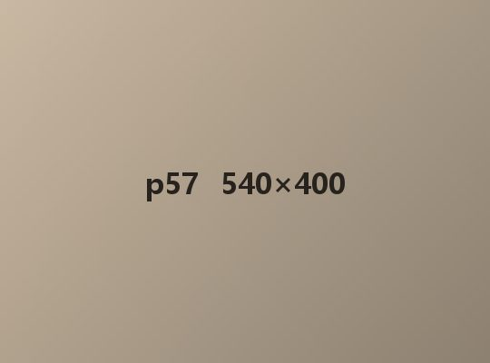
이번 프로젝트는 미니멀리즘을 바탕으로 디자인해, 단정하면서도 편안한 분위기를 고루 살렸습니다. 꼭 필요하지 않은 장식은 덜어 내고 중심이 되는 요소만 남겨, 오히려 더 깊고 세련된 완성도에 무게를 두었습니다. 중간 톤의…
이번 프로젝트는 모던 인테리어가 지닌 본래의 매력을 오롯이 담는 데 초점을 두고, 넓은 평형의 장점을 살리면서 다듬어진 마감과 균형 잡힌 배치로 품격 있는 분위기를 차분하게 내고자 했습니다. 따뜻한 원목 톤과 은은한 간접…
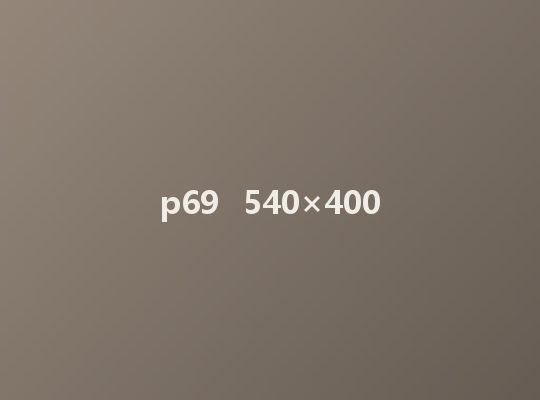
이번 프로젝트는 집 전체를 흰색으로 깔끔하게 마감하고, 짙은 원목을 포인트로 써서 안정감과 고급스러움을 함께 살린 디자인입니다. 꼼꼼한 공간 구성과 색의 균형, 조명 계획이 맞물려 쓰기 편하면서도 감각적인 다크 우드 인…
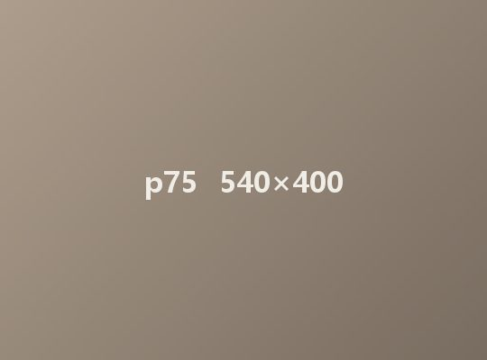
이번 프로젝트는 따뜻한 아이보리 톤과 구조의 변화, 그리고 곳곳에 숨겨 둔 수납 아이디어로 작은 집도 아늑하고 감각 있는 공간으로 디자인했습니다. 밝고 따뜻한 분위기가 집을 넓어 보이게 하고 차분하면서도 포근한 무드를…
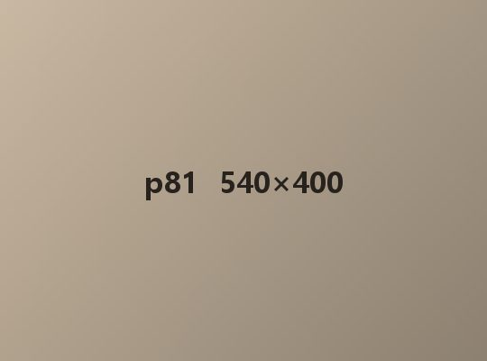
이번 프로젝트는 흰색 바탕에 짙은 목재를 포인트로 써서 깔끔하면서도 톤이 고르게 정돈된 주거 인테리어입니다. 갈색 계열 마감재는 자칫 오래된 듯한 느낌을 줄 수 있지만 절제한 마감 계획으로 정돈된 모습을 지켰습니다. 꼭 필요…